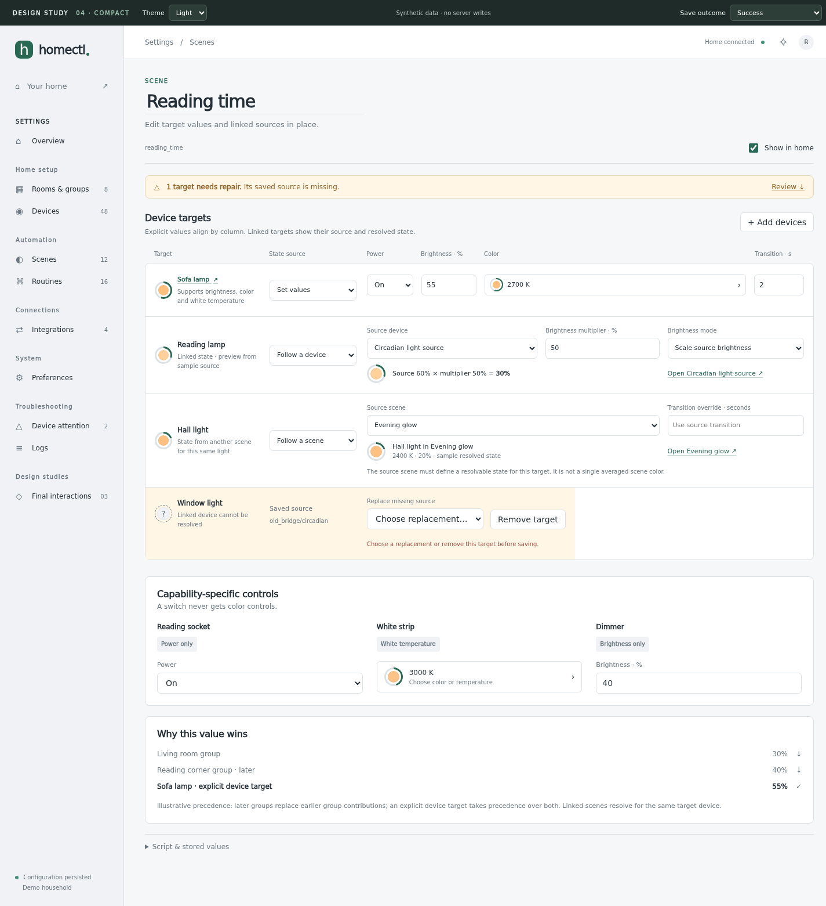
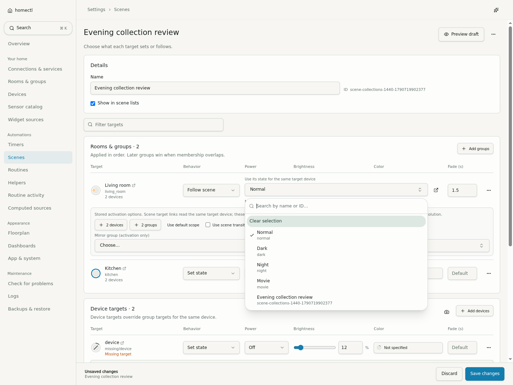

homectl · implementation comparison
Implementation compared with the approved studies
Updated 30 September 2026. Click a screenshot to inspect the full image.
The fixture uses different entities and the selected sky accent; the approved
direction is Compact. These comparisons assess structure, controls and density.
Routine editor · Study 04
Reviewed: three desktop lanes, vertical phone flow, dotted canvas,
colored sections, directly editable controls, compact nested condition rows,
visible ordering and related scene links. The current view is scrolled to the
board; the mockup also shows its page header. The fixture has additional real
schema fields and an unavailable helper, so its flow is longer.
Phone
Controls-first room details
Reviewed on desktop and phone: controls first, compact scenes, desktop brightness,
sourced conditions/history and the embedded map. The fixture deliberately includes
disabled, readonly and missing members, and no humidity samples. Sixteen browser
checks at each size cover scope, saved placement refresh and failed-read recovery.
Rooms list and dashboard
The list shows previews only for placed rooms. Climate summaries use actual
matched sources. The configured dashboard preserves widget sizes and order; its
synthetic membership differs from the mockup. Phone captures are 390 × 844, while
the prototype includes its study toolbar and a taller viewport.
Floorplan Fit and shared settings
A deliberately tall 24 × 32 fixture fits both dimensions. Marker labels stay readable
independently of canvas resolution. Native placement, drag, undo, zoom and resize
checks pass at both sizes. Map inspectors now use shared selectors and recoverable floorplan reads; the brightness ring no longer draws a stray diagonal line. Group and fallback checks now pass at both sizes; newer captures below show stable-size labels, disabled/offline markers and phone tabs on a separate row.
Generic timers
Shared selectors and explicit Save/Discard for all three modes. Device, room and scene targets use canonical detail links. Phone action captures show the start/end sections lower in the form.
Charts and recovery
Synthetic source states distinguish no data, failed reads and retained samples. Phone time labels stay separate and the drawer heading remains visible.
Compact logs
500 synthetic entries. Desktop rows are at most 32 px; phone messages wrap. Full messages and structured links remain available from each row.
Typed extension collections
Functional acceptance captures at 1440 and 390 px, using an isolated dummy
integration. These cover the advanced extension editor rather than a new mockup
direction. Unfinished numbers remain visible with a field error; list moves
preserve each item's values and type choices. The field
coverage inventory tracks the remaining domain-specific fixtures.
Scene targets and references
Study 04's desktop table and phone target cards remain the structural reference.
Current captures use a different fixture and a shorter viewport; the full study
includes illustrative sections. Behavior and power share the settings selector;
source references are searchable and keep their related-page link beside the
trigger on phones. Stored activation options are shown only when present or
requested, with their actual scope semantics explained.
Study 04 · desktop table
Current · desktop reference picker
Current · desktop saved targets
Study 04 · phone
Current · phone reference picker
Current · phone saved targets
Routine scene selection
The existing three-column desktop flow and vertical phone flow remain intact.
Dynamic scene mapping now has a shared mode selector, named mapping controls,
independent fallback drafts and a helper-details link. Phone mappings stack their
label and scene control. This test fixture deliberately includes an unusual enum
key to verify lossless JSON handling; it is not a suggested household label.
Desktop · saved mapping
Desktop · scene picker
Phone · mapping picker
Typed dummy devices
Compact controls applied to integration configuration. No dedicated integration
mockup was approved; these captures show the shared component treatment, two-column
desktop cards and stacked phone cards. The isolated fixture uses synthetic device
names and a disabled integration. Color previews reflect an unspecified color here.
Desktop · saved sensor and light
Phone · sensor types
Phone · saved reading
MQTT collections and failed saves
Shared Compact controls on the existing schema-based integration layout.
These are acceptance captures, not a separate approved mockup. Phone lists
retain move/remove actions beside each field. The failed-save capture deliberately
injects a server error and shows the retained draft with Retry.
Desktop · management choices
Phone · sensor paths
Phone · rejected save
Helper definitions and current values
Shared Compact controls and direct option rows. The fixture changes enum,
numeric, boolean and text definitions. A reset dialog is used only when a saved
definition would invalidate the current value; normal compatible edits need no
dialog. The pending-command capture keeps the separate definition Save bar.
Desktop · type and option controls
Phone · ordered options
Desktop · current-value reset review
Phone · command pending
Computed sources and draft previews
The Compact controls keep day/night previews and direct fields. These isolated
fixtures use Helsinki time and synthetic chart data. Unknown preset versions keep
their stored parameter representation; a successful empty preview has a visible
status instead of an unexplained blank area.
Desktop · preview controls
Phone · computation choices
Phone · unknown preset
Phone · empty preview
Source timing and phone chart readability
Compact forms retain incomplete edits and focus invalid fields. The chart
now keeps readable time labels and line widths on narrow screens. These fixtures
use synthetic chart samples; the curve shown does not represent the edited
profile. Captures are scrolled to the controls being reviewed.
Desktop · unfinished numeric field
Phone · unfinished numeric field
Desktop · saved profile and preview
Phone · readable chart labels
Routine starts and schedule controls
The Study 04 canvas and colored sections remain, with shared selectors and
direct schedule fields. This fixture contains nine start blocks to exercise
eight trigger kinds and both schedule modes. Captures are scrolled to the
calendar or invalid interval; runtime badges and preview results are synthetic.
Desktop · calendar and action duration
Phone · calendar fields
Phone · retained unfinished duration
Nested routine conditions
Study 04's dotted canvas, colored sections and nesting rails remain. Narrow
blocks now stack the value source and field so names are readable. Screenshots
use the isolated condition fixture with synthetic runtime badges and are scrolled
to the fields under review; structured operands demonstrate editing, not a
meaningful household rule.
Desktop · nested condition editor
Phone · readable source controls
Phone · Not and group conditions
Routine execution policy and scene timing
Shared selectors and precise duration controls retain the Compact direction.
These captures are scrolled to the edited rollout and policy fields. Runtime
badges in the isolated fixture are synthetic; they do not demonstrate execution.
Desktop · spatial rollout
Desktop · execution policy
Phone · spatial rollout
Phone · execution policy
Native routine action controls
Study 04's dotted canvas and colored action lane remain. The random-color
fields arrange by block width, keeping duration values readable in a desktop
column. Captures are scrolled to the reviewed controls in an isolated fixture;
runtime badges are synthetic and random colors are not executed.
Desktop · random color controls
Desktop · helper and invocation controls
Phone · random color controls
Phone · helper and invocation controls
Script declarations
Compact declaration rows share the routine control styling. Exact IDs are
available for devices and rooms awaiting discovery. Captures are scrolled to
the edited fields in an isolated fixture; runtime badges are synthetic.
Desktop · future references
Desktop · independent script block
Phone · future references
Phone · independent script block
Scene creation and return to a routine
The originating action is focused on return. A missing action offers the created scene without claiming it was selected. Fixture previews are synthetic; these captures demonstrate authoring only.
Desktop · originating action
Phone · returned selection
Phone · missing action recovery
Empty scene cycle
Save keeps the draft local and focuses Add scene. The existing guidance now appears beside that control. These are isolated fixture captures.
Desktop · empty cycle repair
Phone · empty cycle repair
Assistant review and recovery
Native interaction checks cover request failures, partial outcomes and fixed floorplan containment. Captures are scrolled to the reviewed controls. Responses are simulated; no household changes are executed.
Desktop · persistent request error
Desktop · partial application
Phone · persistent request error
Phone · partial application
Conversation and attachment search recovery
Failed reads stay distinct from empty results. Retry preserves the current conversation and attachments. Responses are simulated on the isolated fixture.
Desktop · conversation recovery
Desktop · search recovery
Phone · conversation recovery
Phone · search recovery
Streaming and cancellation
Interrupted responses are explicit. The next request can complete without reloading. These browser captures use a real local SSE transport with synthetic replies.
Desktop · interrupted response
Desktop · successful next request
Phone · interrupted response
Phone · successful next request
Live-state recovery and retained editing
Displayed values stay visible with a warning while controls await a fresh snapshot. An unconfirmed command is reported honestly and never replayed. Captures use a temporary local socket server and synthetic state.
Desktop · waiting for fresh state
Desktop · recovered with retained draft
Phone · waiting for fresh state
Phone · recovered with retained draft
Search catalogs and recovery
Compact search includes full catalogs and computed sources, identifies incomplete results and retains the query on Retry. Captures use synthetic local data and injected catalog failures.
Desktop · unavailable
Desktop · recovered
Desktop · source
Phone · unavailable
Phone · recovered
Phone · source
Backup review and recovery
Large changes remain filterable. Failed applies keep the file and require another review. Local synthetic preview data and intercepted failures; no configuration was restored.
Desktop · filtered
Desktop · apply-failed
Phone · filtered
Phone · apply-failed
Viewport, keyboard and readable colors
Compact routine, scene and widget editing with visible actions, light/dark themes and keyboard search. Keyboard space is simulated; reflow uses CSS dimensions and DPR emulation. Synthetic local fixtures, no configuration writes.
Desktop routine · dark
Desktop scene · light
Phone routine · wrapped title
Phone scene · dark
Phone search · simulated keyboard
Phone widget · simulated keyboard
Routine · 200% equivalent reflow
Widget · 200% equivalent reflow
Shared selection and category dialogs
Staged membership selection and navigation keep their headings and actions visible while long lists scroll. Keyboard geometry is simulated; synthetic catalogs only, no configuration writes.
Desktop selection
Phone selection above simulated keyboard
Phone categories with last link focused
Categories in a short viewport
Room/group collections and repair
Missing members remain repairable, selections save explicitly, and deletion/creation conflicts retain drafts. Synthetic local records; no household configuration changes.
Desktop · multiple memberships
Phone · missing members and repair controls
Phone · retained draft after an ID collision
Narrow phone · retained draft after deletion
Scene target repair
Unsupported raw values remain visible and preserved until explicitly replaced or removed. Desktop rows and phone cards share the repair flow; temporary local fixtures only.
Desktop · preserved raw targets
Desktop · explicit repair saved
Phone · saved value and repair actions
Phone · explicit repair saved
Routine reference recovery
Failed reference lists have an explicit Retry. Drafts and unavailable IDs survive unrelated saves; repair remains an explicit edit. Temporary local records and simulated catalog failure; no routine execution.
Desktop · retained draft during catalog failure
Desktop · saved reference repairs
Phone · retained draft during catalog failure
Phone · saved reference repairs
Integration fields and repair
Dummy-device malformed values stay visible until explicitly repaired; ESPHome exposes all five profile overrides with retained drafts and default resets. Synthetic disabled fixture integrations; no broker connections or live commands.
Desktop · stored color repair
Desktop · ESPHome profile fields
Phone · stored color repair
Phone · ESPHome profile fields
Computed-source health
Initial computation failures appear before an output device exists. Source details retain drafts through health read failures and Retry. Synthetic local source and intercepted health responses; runtime behavior has separate Rust evidence.
Desktop · source attention
Desktop · initial computation failure
Phone · initial computation failure
Phone · retained draft during health failure
Calibration recovery
Shared reference pickers preserve unavailable IDs. Missing references stop previews and retain matching points; failed catalog refreshes keep editable drafts with Retry. Fifteen checks at each viewport use synthetic references and an isolated fixture server; no physical light was commanded.
Desktop · missing color reference
Phone · missing color reference
Phone · cached read failure
Desktop · missing brightness reference
MQTT range and collection repair
Malformed ranges preserve their original payload until explicit replacement. Numeric drafts survive navigation and block invalid saves. The displayed defaults match the runtime. Temporary disabled fixture integrations only; no broker or household changes.
Desktop · original malformed ranges
Desktop · retained numeric draft
Phone · explicit range repair
Phone · incomplete endpoint
Source and helper references
Declared routine dependencies include scene-selection helpers and source/device inputs. Malformed scene targets stay safe to inspect. Each source-reference family has independent read recovery; drafts remain through Retry and related navigation. Local synthetic catalogs only.
Desktop · source references
Phone · source references
Phone · scene-selection helper
Phone · partial reference failure